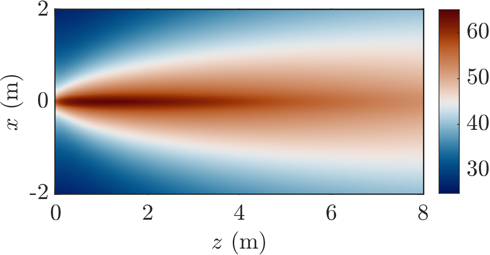

画图建议指南 钟家鑫 (March 2, 2024) 1 简介 本文档总结论文画图的一些建议。 2 二维图 图 1 由附件的demo.m文件生成。 主要注意事项包括： • 字体尽可能大。 • 若横纵坐标表示实际物理的长度，则比例应与物理的长度比例相同。如图 1 中长宽比例就当为8m:4m=2:1。 • 图中所有文字采用字体 Times New Roman，xlabel 和 ylabel 等采用 LaTeX 为 Interpreter。 • 输出的图为矢量图，如 *.pdf。 • 选择更现代化的 colormap，图 1 选择的是vik [1]。  Figure 1: 二维音频声场声压级分布图 References [1] F. Crameri, G. E. Shephard, and P. J. Heron (2020) The misuse of colour in science communication. Nat. Commun. 11 (1), pp. 5444. External Links: ISSN 2041-1723, Document Cited by: 5th item.